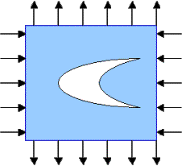
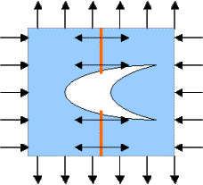
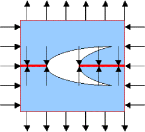
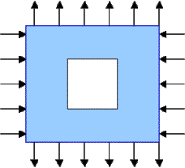
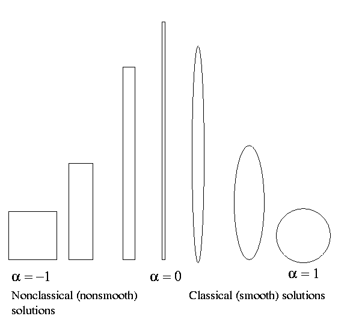

This loading corresponds to a uniform stress field in an undamaged plane. The stress is closer to shear which corresponds to a = -1 rather than to uniform loading which corresponds to a = 1 .If a < 0 , the old guess for optimal shapes does not work: The ratio a of ellipses' axes cannot be negative!
In a sense, this problem remains of the Cardano problem which has led to introduction of complex numbers. There, a problem (the solution of cubic equation by the Cardano formula) required to perform an "impossible operation": To take a square root of a negative number. Here, our established rule would require to find an ellipse with negative axes ratio.
We remind that:
The variational theory (stationary necessary conditions) predicts that the energy density is constant everywhere on the boundary of an optimal hole. This condition implies that
Indeed, if the plane is cut across the hole by a vertical cut, the
normal force that keeps the parts together is positive:

If the cut is horizontal, the normal force that keeps the parts together is negative:
The riddle is: How it is possible to combine the conditions
- the constancy of the absolute value of the tension - and - the variable sign of the tension?
We must conclude that:
An optimal shape corresponds to a piece-wise constant tension that keeps its absolute value constant everywhere on the boundary and jumps in certain points of the contour.
What geometry corresponds to such a solution?
We mention, that the external field is smooth; therefore the discontinuous tension must correspond to a discontinuous normal of the boundary. Therefore,
An optimal shape has edges!
The optimal shapes of the holes for various negative values of the ratio were numerically found. They are very close to rectangles, but have slightly convex sides. The ratio of sides lengths is approximately equal to |a|.
One should wonder why the stress does not have singularities in the corners of the optimal shapes. Indeed, the solution to the plane elasticity problem has the singularity in the inner corner. However, the special choice of the angle (equal to 102.5 degrees for the antisymmetric load, a=-1) and orientation of the hole makes the coefficient by the singular exponent vanish (!).
Particularly, the pure shear (that correspond to a = -1) corresponds to an "almost square" optimal inclusion which is symmetric with respect to both axes and diagonals:
The next graph demonstrates the variety of optimal shapes (upper line) and the relative performance (lower line) of optimal holes, in dependence of a (-1 < a < 1).
Notice that a single inclusion corresponds to the absolute minimum
if 0 < a < 1.